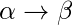

According to chomsky hierarchy, grammars are divided of 4 types:
Type 0 known as unrestricted grammar. Type 1 known as context sensitive grammar. Type 2 known as context free grammar. Type 3 Regular Grammar.

Type 0 ( Unrestricted Grammar )
In Type 0
Type-0 grammars include all formal grammars. Type 0 grammar language are recognized by turing machine. These languages are also known as the recursively enumerable languages.
Grammar Production in the form of

where
 is ( V + T)* V ( V + T)*
is ( V + T)* V ( V + T)*
V : Variables
T : Terminals.
 is ( V + T )*.
is ( V + T )*.
In type 0 there must be at least one variable on Left side of production.
For example,
Sab –> ba
A –> S.
Here, Variables are S, A and Terminals a, b.
Type 1 (Context Sensitive )
Type-1 grammars generate the context-sensitive languages. The language generated by the grammar are recognized by the Linear Bound Automata
In Type 1
1. First of all Type 1 grammar should be Type 0.
2. Grammar Production in the form of
|| <= ||
i.e count of symbol in is less than or equal to
For Example,
S –> AB
AB –> abc
B –> b
Type 2 ( Context Free )
Type-2 grammars generate the context-free languages. The language generated by the grammar is recognized by a Non Deterministic Push down Automata. Type-2 grammars generate the context-free languages.
In Type 2,
1. First of all it should be Type 1.
2. Left hand side of production can have only one variable.
|| = 1.
Their is no restriction on .
For example,
S –> AB
A –> a
B –> b
Type 3 (Regular Grammar)
Type-3 grammars generate the regular languages.These languages are exactly all languages that can be decided by a finite state automaton.
Type 3 is most restricted form of grammar.
Type 3 should be in the given form only :
V –> VT* / T*.
(or)
V –> T*V /T*
for example :
S –> ab.
REFERENCES
https://en.wikipedia.org/wiki/Chomsky_hierarchy